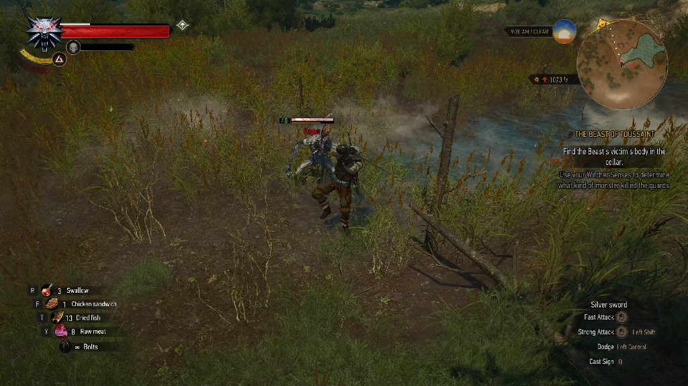

Role playing games is a genre where in genral the player advances throuh a story quest, and often many side quest. The players character or party of characters gain experience points that can improve the atrributes and abilities of the character or party characters(source). The genre has its roots in the Dungeons and Dragons role-playing game.
Western RPG:
A western role playing game is typically a rpg that originates in North America or Europe.
Traits:
- Often has an open world or is a dungeon crawler
- Often has a customizable player character
- Has a realistic or gritty art style
- Optional side quests
Example: Witcher Series
Japanese RPG:
A Japanese or Eastern role playing game is typically a rpg that originates in East Asia especially in Japan.
Traits:
- Cartoony(manga, or anime) art style.
- Linear plots
- Player usually controls a party of pre-designed charcters
- Party Members writen into the plot
- Has grinding